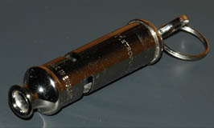
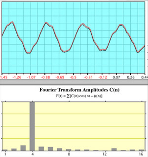
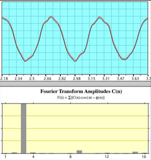
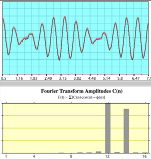
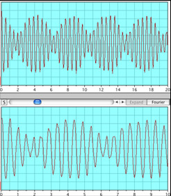

London Police Whistle
A London police whistle produces a sound with two high pitches and a lower third pitch, which is a good example of the production of subjective tones. Within the compact whistle are two short pipes which produce two separate high frequencies when blown.
|  | These two high frequency tones interfere with each other and produce a beat frequency. The beat frequency is equal to the difference between the frequencies of the two tones and is perceived by the human ear as a third tone, called a "subjective tone" or "difference tone". |
The image below is the beat pattern produced by the whistle when both pipes are sounded simultaneously, producing a unique and piercing three-note sound.
Measurement of the pattern gives a time between minima of about 3.89 ms, corresponding to a difference frequency of about 258 Hz between the two tones.
|  | Whistle ALabeling the two pipes of the whistle A and B, the illustration at left shows the sound of Whistle A alone. The top graph is the ordinary display of signal voltage from the microphone vs time. The bottom graph is the fast Fourier transform (FFT) of that signal. It shows that most of the power is at one frequency, approximating a sine wave. The fact that the peak showing most of the power is at position four just reflects the fact that four periods were chosen for the FFT sample, |
|  | Whistle BThis is the same kind of display with whistle B alone. Three periods were chosen for the FFT this time, resulting in a main peak at position 3. |
|  | Whistles A and BWhen whistles A and B are sounded simultaneously the time plot shows the characteristic beat frequency pattern. The FFT shows the two distinct frequencies of the individual pipes. |
The interpretation of these illustrations would appear to be straightforward: two pure tones sounded simultaneously give a beat frequency which is the difference tone between the two frequencies. But experimentally the frequency of whistle A was 2168 Hz and that of whistle B was 1843 Hz. The difference between these is 325 Hz, but the beat tone frequency was measured to be 258 Hz. It may be that opening both holes and sounding the two pipes simultaneously affects both of their frequencies.
|  | The London police whistle sound from "The Science of Sound", Bell Telephone Laboratories, was analyzed and a plot of the interference pattern at two different time scales is shown at left. In that case, the measured beat frequency was 229 Hz. The stated single-pipe frequencies were 2136 Hz and 1904 Hz, leading to an expectation of 232 Hz as the difference tone. Our measured value is within experimental error of that value. Our actual measurements of the single tones were 2069 Hz and 1843 Hz, but the difference of 226 Hz between these is still within reasonable error of the measured 229 Hz beat frequency. This makes it puzzling why our more recent whistle experiment did not give a beat frequency equal to the difference of the single-pipe frequencies. |
Experimenters: Amber Bishop, Nicole Geiger, Ryan Hennings.
Hearing concepts
Traveling wave concepts
| HyperPhysics***** Sound | R Nave |